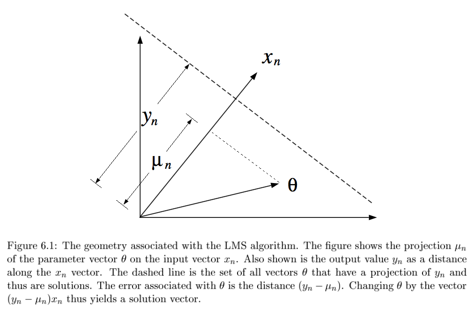
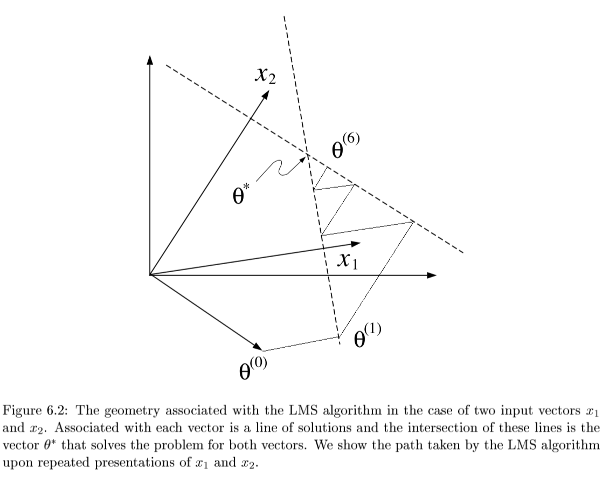
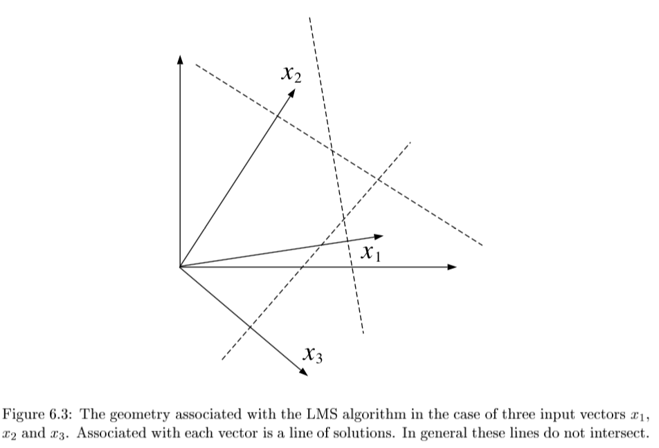
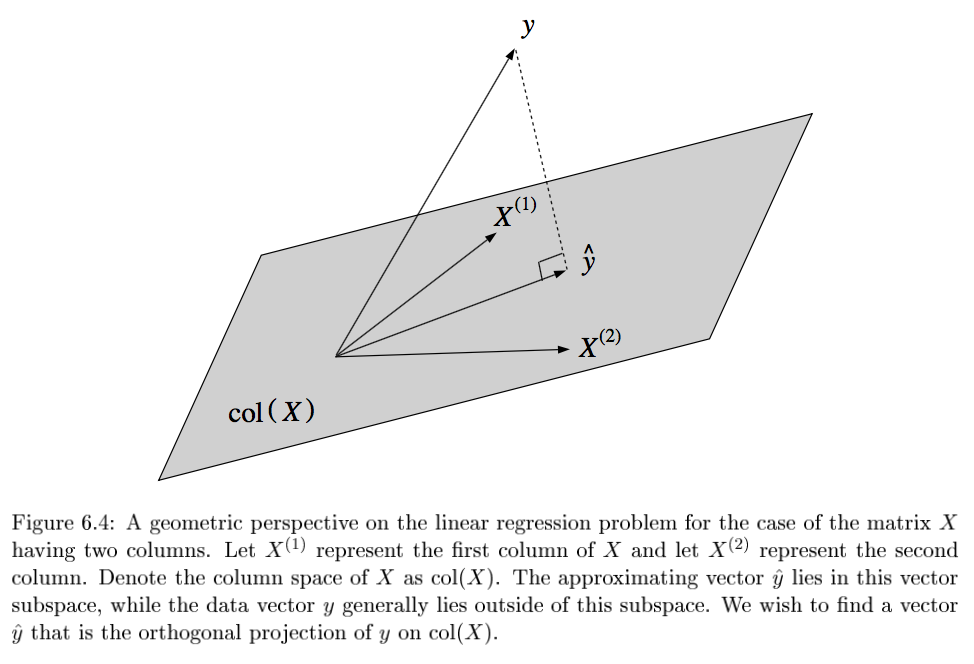

linear models
view markdown- Material from “Statistical Models Theory and Practice” - David Freedman
introduction
-
$Y = X \beta + \epsilon$
type of linear regression X Y simple univariate univariate multiple multivariate univariate multivariate either multivariate generalized either error not normal -
minimize: $L(\theta) = ||Y-X\beta||_2^2 \implies \hat{\theta} = (X^TX)^{-1} X^TY$
-
2 proofs
- set deriv and solve
- use projection matrix H to show HY is proj of Y onto R(X)
- the projection matrix maps the responses to the predictions: $\hat{y} = Hy$
- define projection (hat) matrix $H = X(X^TX)^{-1} X^T$
- show $||Y-X \theta||^2 \geq ||Y - HY||^2$
- key idea: subtract and add HY
- interpretation
- if feature correlated, weights aren’t stable / can’t be interpreted
- curvature inverse $(X^TX)^{-1}$ - dictates stability
- importance: weight * feature value
- LS doesn’t work when p » n because of colinearity of X columns
- assumptions
- $\epsilon \sim N(X\beta,\sigma^2)$
- homoscedasticity: $var(Y_i|X)$ is the same for all i
- opposite of heteroscedasticity
- multicollinearity - predictors highly correlated
- variance inflation factor (VIF) - measure how much the variances of the estimated regression coefficients are inflated as compared to when the predictors are not linearly related
- normal linear regression
- variance MLE $\hat{\sigma}^2 = \sum (y_i - \hat{\theta}^T x_i)^2 / n$
- in unbiased estimator, we divide by n-p
- LS has a distr. $N(\theta, \sigma^2(X^TX)^{-1})$
- variance MLE $\hat{\sigma}^2 = \sum (y_i - \hat{\theta}^T x_i)^2 / n$
- linear regression model
- when n is large, LS estimator ahs approx normal distr provided that X^TX /n is approx. PSD
- weighted LS: minimize $\sum [w_i (y_i - x_i^T \theta)]^2$
- $\hat{\theta} = (X^TWX)^{-1} X^T W Y$
- heteroscedastic normal lin reg model: erorrs ~ N(0, 1/w_i)
- leverage scores - measure how much each $x_i$ influences the LS fit
- for data point i, $H_{ii}$ is the leverage score
- LAD (least absolute deviation) fit
- MLE estimator when error is Laplacian
recent notes
regularization
- when $(X^T X)$ isn’t invertible can’t use normal equations and gradient descent is likely unstable
- X is nxp, usually n » p and X almost always has rank p
- problems when n < p
- intuitive way to fix this problem is to reduce p by getting rid of features
- a lot of papers assume your data is already zero-centered
- conventionally don’t regularize the intercept term
- ridge regression (L2)
- if (X^T X) not invertible, add a small element to diagonal
- then it becomes invertible
- small lambda -> numerical solution is unstable
- proof of why it’s invertible is difficult
- argmin $\sum_i (y_i - \hat{y_i})^2+ \lambda \vert \vert \beta\vert \vert _2^2 $
- equivalent to minimizing $\sum_i (y_i - \hat{y_i})^2$ s.t. $\sum_j \beta_j^2 \leq t$
- solution is $\hat{\beta_\lambda} = (X^TX+\lambda I)^{-1} X^T y$
- for small $\lambda$ numerical solution is unstable
- When $X^TX=I$, $\beta {Ridge} = \frac{1}{1+\lambda} \beta{Least Squares}$
- lasso regression (L1)
- $\sum_i (y_i - \hat{y_i})^2+\lambda \vert \vert \beta\vert \vert _1 $
- equivalent to minimizing $\sum_i (y_i - \hat{y_i})^2$ s.t. $\sum_j \vert \beta_j\vert \leq t$
- “least absolute shrinkage and selection operator”
- lasso - least absolute shrinkage and selection operator - L1
- acts in a nonlinear manner on the outcome y
- keep the same SSE loss function, but add constraint of L1 norm
- doesn’t have closed form for Beta
- because of the absolute value, gradient doesn’t exist
- can use directional derivatives
- best solver is LARS - least angle regression - if tuning parameter is chose well, will set lots of coordinates to 0 - convex functions / convex sets (like circle) are easier to solve - disadvantages
- if p>n, lasso selects at most n variables
- if pairwise correlations are very high, lasso only selects one variable
- elastic net - hybrid of the other two
- $\beta_{Naive ENet} = \sum_i (y_i - \hat{y_i})^2+\lambda_1 \vert \vert \beta\vert \vert _1 + \lambda_2 \vert \vert \beta\vert \vert _2^2$
- l1 part generates sparse model
- l2 part encourages grouping effect, stabilizes l1 regularization path
- grouping effect - group of highly correlated features should all be selected - naive elastic net has too much shrinkage so we scale $\beta_{ENet} = (1+\lambda_2) \beta_{NaiveENet}$ - to solve, fix l2 and solve lasso
the regression line (freedman ch 2)
- regression line
- goes through $(\bar{x}, \bar{y})$
- slope: $r s_y / s_x$
- intercept: $\bar{y} - slope \cdot \bar{x}$
- basically fits graph of averages (minimizes MSE)
- SD line
- same except slope: $sign(r) s_y / s_x$
- intercept changes accordingly
- for regression, MSE = $(1-r^2) Var(Y)$
multiple regression (freedman ch 4)
- assumptions
- assume $n > p$ and X has full rank (rank p - columns are linearly independent)
- $\epsilon_i$ are iid, mean 0, variance $\sigma^2$
- $\epsilon$ independent of $X$
- $e_i$ still orthogonal to $X$
-
OLS is conditionally unbiased
- $E[\hat{\theta} | X] = \theta$
- $Cov(\hat{\theta}|X) = \sigma^2 (X^TX)^{-1}$
- $\hat{\sigma^2} = \frac{1}{n-p} \sum_i e_i^2$
- this is unbiased - just dividing by n is too small since we have minimized $e_i$ so their variance is lower than var of $\epsilon_i$
- $\hat{\sigma^2} = \frac{1}{n-p} \sum_i e_i^2$
- random errors $\epsilon$
- residuals $e$
- $H = X(X^TX)^{-1} X^T$
- e = (I-H)Y = $(I-H) \epsilon$
- H is symmetric
- $H^2 = H, (I-H)^2 = I-H$
- HX = X
- $e \perp X$
- basically H projects Y int R(X)
- $E[\hat{\sigma^2}|X] = \sigma^2$
- random errs don’t need to be normal
- variance
- $var(Y) = var(X \hat{\theta}) + var(e)$
- $var(X \hat{\theta})$ is the explained variance
- fraction of variance explained: $R^2 = var(X \hat{\theta}) / var(Y)$
- like summing squares by projecting
- if there is no intercept in a regression eq, $R^2 = ||\hat{Y}||^2 / ||Y||^2$
- $var(Y) = var(X \hat{\theta}) + var(e)$
advanced topics
BLUE
- drop assumption: $\epsilon$ independent of $X$
- instead: $E[\epsilon|X]=0, cov[\epsilon|X] = \sigma^2 I$
- can rewrite: $E[\epsilon]=0, cov[\epsilon] = \sigma^2 I$ fixing X
- Gauss-markov thm - assume linear model and assumption above: when X is fixed, OLS estimator is BLUE = best linear unbiased estimator
- has smallest variance.
- prove this
GLS = GLM
- GLMs roughly solve the problem where outcomes are non-Gaussian
- mean is related to $w^tx$ through a link function (ex. logistic reg assumes sigmoid)
- also assume different prob distr on Y (ex. logistic reg assumes Bernoulli)
- generalized least squares regression model: instead of above assumption, use $E[\epsilon|X]=0, cov[\epsilon|X] = G, : G \in S^K_{++}$
- covariance formula changes: $cov(\hat{\theta}_{OLS}|X) = (X^TX)^{-1} X^TGX(X^TX)^{-1}$
- estimator is the same, but is no longer BLUE - can correct for this: $(G^{-1/2}Y) = (G^{-1/2}X)\theta + (G^{-1/2}\epsilon)$
- feasible GLS=Aitken estimator - use $\hat{G}$
- examples
- simple
- iteratively reweighted
- 3 assumptions can break down:
- if $E[\epsilon|X] \neq 0$ - GLS estimator is biased
- else if $cov(\epsilon|X) \neq G$ - GLS unbiased, but covariance formula breaks down
- if G from data, but violates estimation procedure, estimator will be misealding estimate of cov
path models
- path model - graphical way to represent a regression equation
- making causal inferences by regression requires a response schedule
simultaneous equations
- simultaneous-equation models - use instrumental variables / two-stage least squares
- these techniques avoid simultaneity bias = endogeneity bias
binary variables
- indicator variables take on the value 0 or 1
- dummy coding - matrix is singular so we drop the last indicator variable - called reference class / baseline class
- effect coding
- one vector is all -1s
- B_0 should be weighted average of the class averages
- orthogonal coding
- additive effects assume that each predictor’s effect on the response does not depend on the value of the other predictor (as long as the other one was fixed
- assume they have the same slope
- interaction effects allow the effect of one predictor on the response to depend on the values of other predictors.
- $y_i = β_0 + β_1x_{i1} + β_2x_{i2} + β_3x_{i1}x_{i2} + ε_i$
LR with non-linear basis functions
- can have nonlinear basis functions (ex. polynomial regression)
- radial basis function - ex. kernel function (Gaussian RBF)
- $exp(-(x-r)^2 / (2 \lambda ^2))$
- non-parametric algorithm - don’t get any parameters theta; must keep data
locally weighted LR (lowess)
- recompute model for each target point
- instead of minimizing SSE, we minimize SSE weighted by each observation’s closeness to the sample we want to query
kernel regression
-
nonparametric method
-
$\operatorname{E}(Y X=x) = \int y f(y x) dy = \int y \frac{f(x,y)}{f(x)} dy$ Using the [[kernel density estimation]] for the joint distribution ‘‘f(x,y)’’ and ‘‘f(x)’’ with a kernel ‘’’'’K’’’’’,
$\hat{f}(x,y) = \frac{1}{n}\sum_{i=1}^{n} K_h\left(x-x_i\right) K_h\left(y-y_i\right)$ $\hat{f}(x) = \frac{1}{n} \sum_{i=1}^{n} K_h\left(x-x_i\right)$
we get
$\begin{align} \operatorname{\hat E}(Y X=x) &= \int \frac{y \sum_{i=1}^{n} K_h\left(x-x_i\right) K_h\left(y-y_i\right)}{\sum_{j=1}^{n} K_h\left(x-x_j\right)} dy,\ &= \frac{\sum_{i=1}^{n} K_h\left(x-x_i\right) \int y \, K_h\left(y-y_i\right) dy}{\sum_{j=1}^{n} K_h\left(x-x_j\right)},\ &= \frac{\sum_{i=1}^{n} K_h\left(x-x_i\right) y_i}{\sum_{j=1}^{n} K_h\left(x-x_j\right)},\end{align}$
GAM = generalized additive model
- generalized additive models: assume mean output is sum of functions of individual variables (no interactions)
- learn individual functions using splines
- $g(\mu) = b + f(x_0) + f(x_1) + f(x_2) + …$
- can also add some interaction terms (e.g. $f(x_0, x_1)$)
sums interpretation
- SST - total sum of squares - measure of total variation in response variable
- $\sum(y_i-\bar{y})^2$
- SSR - regression sum of squares - measure of variation explained by predictors
- $\sum(\hat{y_i}-\bar{y})^2$
- SSE - measure of variation not explained by predictors
- $\sum(y_i-\hat{y_i})^2$
- SST = SSR + SSE
- $R^2 = \frac{SSR}{SST}$ - coefficient of determination
- measures the proportion of variation in Y that is explained by the predictor
geometry - J. 6
-
LMS = least mean squares (p-dimensional geometries)

- $y_n = \theta^T x_n + \epsilon_n$
- $\theta^{(t+1)}=\theta^{(t)} + \alpha (y_n - \theta^{(t)T} x_n) x_n$
-
converges if $0 < \alpha < 2/ x_n ^2$ 

-
- if N=p and all $x^{(i)}$ are lin. indepedent, then there exists exact solution $\theta$
-
solving requires finding orthogonal projection of y on column space of X (n-dimensional geometries)

- 3 Pfs
- geometry - $y-X\theta^*$ must be orthogonal to columns of X: $X^T(y-X\theta)=0$
- minimize least square cost function and differentiate
- show HY projects Y onto col(X)
- either of these approaches yield the normal eqns: $X^TX \theta^* = X^Ty$
-
SGD
- SGD converges to normal eqn
-
convergence analysis: requires $0 < \rho < 2/\lambda_{max} [X^TX]$
- algebraic analysis: expand $\theta^{(t+1)}$ and take $t \to \infty$
- geometric convergence analysis: consider contours of loss function
-
weighted least squares: $J(\theta)=\frac{1}{2}\sum_n w_n (y_n - \theta^T x_n)^2$
- yields $X^T WX \theta^* = X^T Wy$
-
probabilistic interpretation
- $p(y|x, \theta) = \frac{1}{(2\pi\sigma^2)^{N/2}} exp \left( \frac{-1}{2\sigma^2} \sum_{n=1}^N (y_n - \theta^T x_n)^2 \right)$
- $l(\theta; x,y) = - \frac{1}{2\sigma^2} \sum_{n=1}^N (y_n - \theta^T x_n)^2$
- log-likelihood is equivalent to least-squares cost function
likelihood calcs
normal equation
- $L(\theta) = \frac{1}{2} \sum_{i=1}^n (\hat{y}_i-y_i)^2$
- $L(\theta) = 1/2 (X \theta - y)^T (X \theta -y)$
- $L(\theta) = 1/2 (\theta^T X^T - y^T) (X \theta -y)$
- $L(\theta) = 1/2 (\theta^T X^T X \theta - 2 \theta^T X^T y +y^T y)$
- $0=\frac{\partial L}{\partial \theta} = 2X^TX\theta - 2X^T y$
- $\theta = (X^TX)^{-1} X^Ty$
ridge regression
- $L(\theta) = \sum_{i=1}^n (\hat{y}_i-y_i)^2+ \lambda \vert \vert \theta\vert \vert _2^2$
- $L(\theta) = (X \theta - y)^T (X \theta -y)+ \lambda \theta^T \theta$
- $L(\theta) = \theta^T X^T X \theta - 2 \theta^T X^T y +y^T y + \lambda \theta^T \theta$
- $0=\frac{\partial L}{\partial \theta} = 2X^TX\theta - 2X^T y+2\lambda \theta$
- $\theta = (X^TX+\lambda I)^{-1} X^T y$